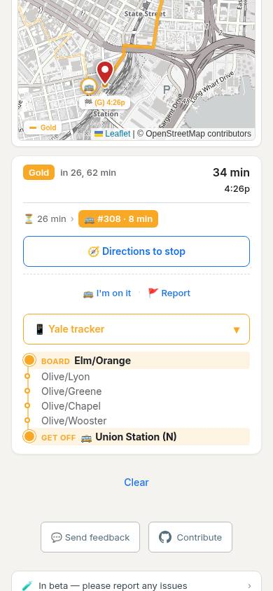
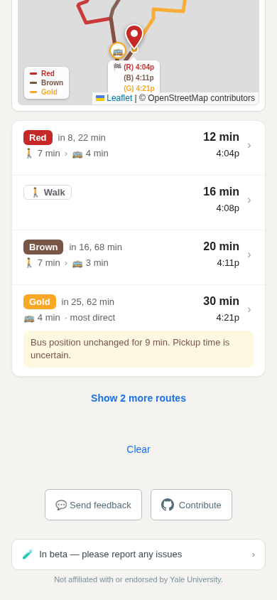
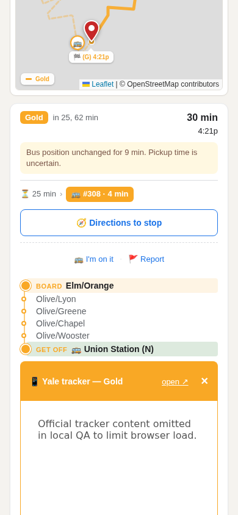
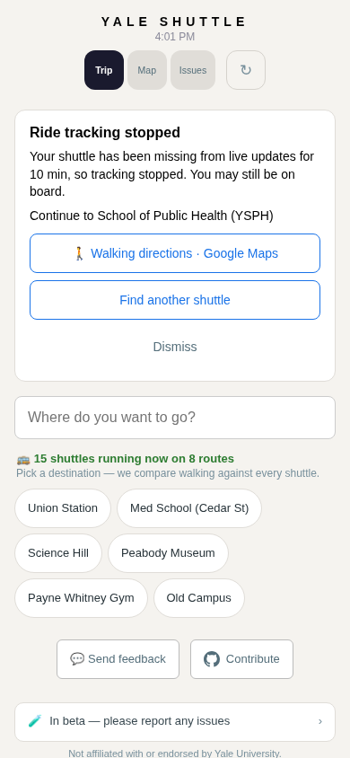
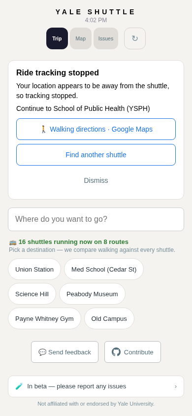
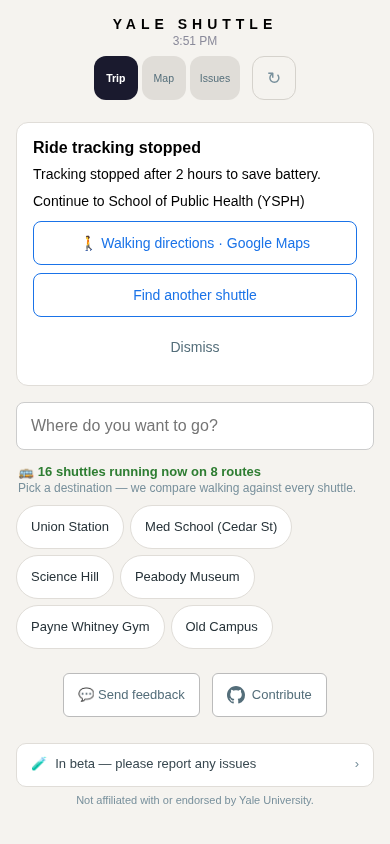
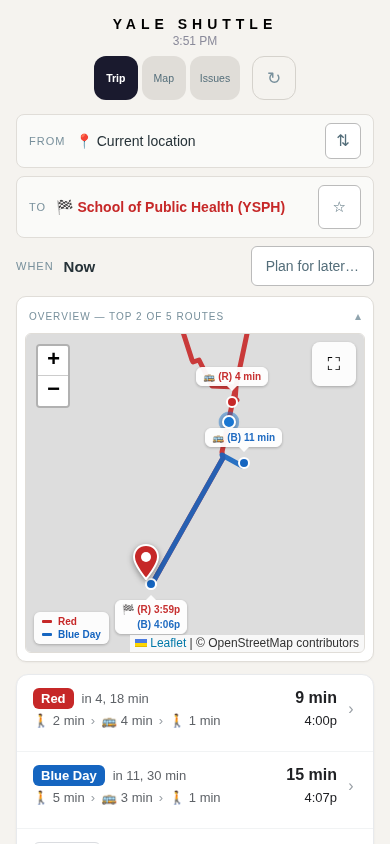

Before: live Gold waiting screen

After images are controlled local browser tests. Remote tracker content and map tiles were omitted to limit Pi load. Before image is live production.
Test report and unresolved repeated-stop finding · Browser results
Before: live Gold waiting screen

After: Gold uncertainty notice

After: tracker expanded below stops; remote content stubbed

After: missing shuttle recovery

After: off-bus recovery

After: two-hour expiry recovery

After: replan retains YSPH
